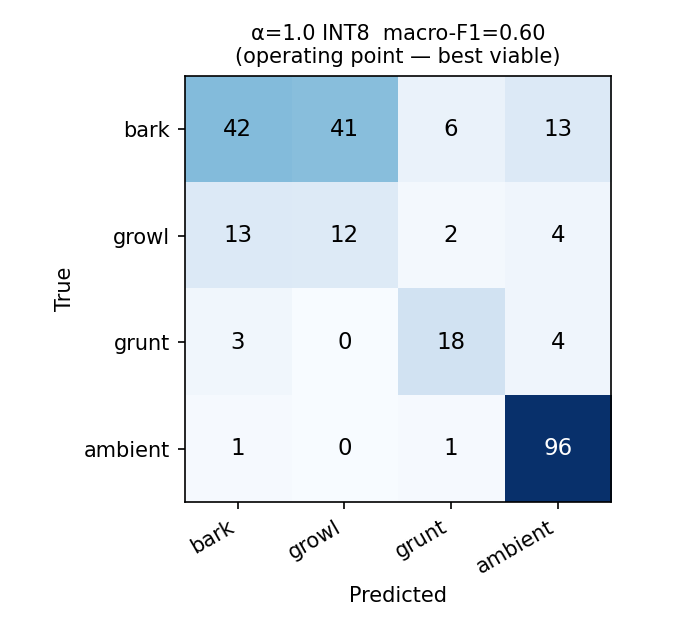
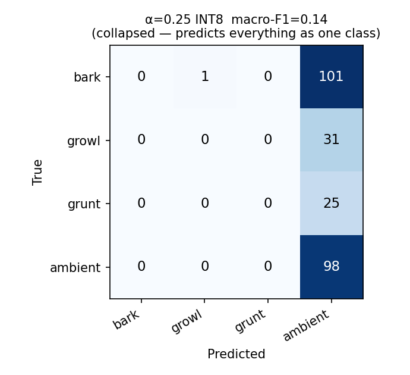
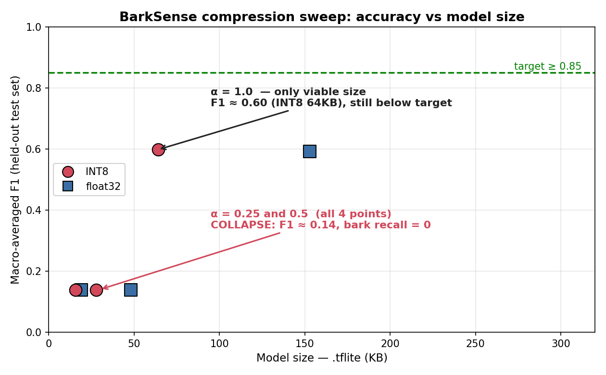
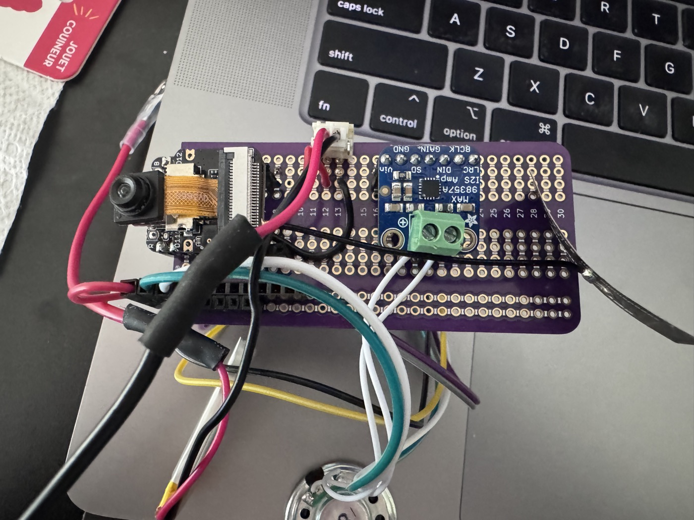
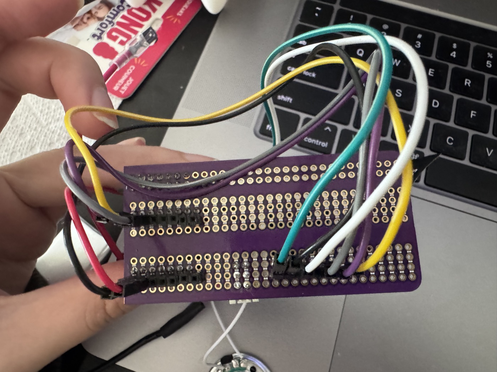
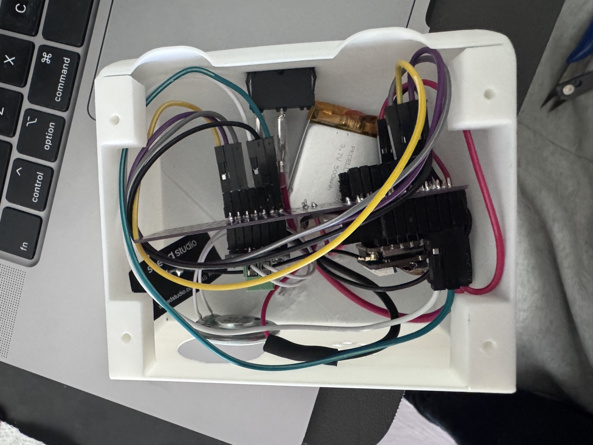
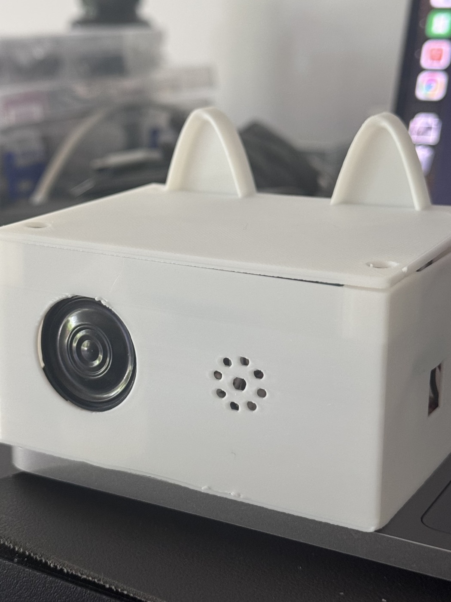

tf.lite, run on-chip via TFLite Micro — labels 1-second audio windows as bark · growl · grunt · ambient and acts locally.| Metric | Target | Actual | |
|---|---|---|---|
| Macro-F1 (4-class) | ≥ 85% | 60% | ✗ |
| Bark recall | ≥ 82% | 41% | ✗ |
| Latency / window | ≤ 500 ms | ~150 ms* | ~ |
| Battery life | ≥ 12 h | untested | · |
| Flash footprint | ≤ 300 KB | 64 KB | ✓ |
| Peak RAM | ≤ 100 KB | 1.8 MB | ✗ |
*feature extraction; α=1.0 Invoke intermittently stalls — see journey. Values for α=1.0 INT8 (best viable model).
There is no operating point that meets every target. Best viable accuracy = α=1.0 INT8 (F1 0.60); it stalls on hardware, so the demo ships the small α=0.25 (stable, real-time, accepts lower accuracy).



DS-CNN width α ∈ {0.25, 0.5, 1.0} × {float32, INT8}, on the locked held-out test set.
| Failure | Root cause | Unlock |
|---|---|---|
| Small models are dead — predict one class, bark recall 0 | 4-class task exceeds tiny-model capacity | Move to α=1.0 (F1 0.60) — breaks RAM budget |
| On device, everything reads "dog 0.97" — constant false alarms | PDM mic ~1300 DC offset; training audio is DC-free → power_to_db(ref=max) swamped → degenerate features |
Subtract DC per clip → real bark scores 0.70, ambient stays ambient |
| α=1.0 inference freezes for minutes | 1.8 MB arena in OPI PSRAM → Invoke() intermittently stalls |
Deploy small α=0.25 (0.46 MB) → stable real-time; trade accuracy for a working demo |
| Board | Seeed XIAO ESP32S3 Sense — 240 MHz, 8 MB flash, 8 MB OPI PSRAM |
| Mic | onboard PDM (I2S0): CLK 42, DATA 41 |
| Speaker | MAX98357A (I2S1): BCLK D0, LRCLK D1, DIN D2 |
| LED / Power | GPIO 21 · 500 mAh LiPo · 4 MB LittleFS for owner voice |
Works today: full on-device pipeline; live bark/growl → LED + 1.5 s owner-voice + phone push; quiet ignored; real-time, no stalls (α=0.25).



